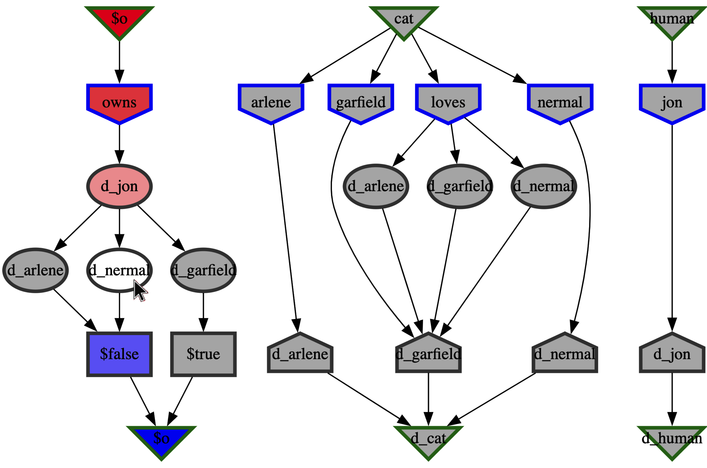

IIV - Interactive Interpretation Viewer
Basic Interaction
- Text interpretations are useful but can be difficult humans
- IIV's graphical rendering provides an easy overview
- Mouse-over highlights interpretation of symbols

Implementation
- Built on top of IDV
- Interpretation translated into a derivation form
- Translated form passed to IDV